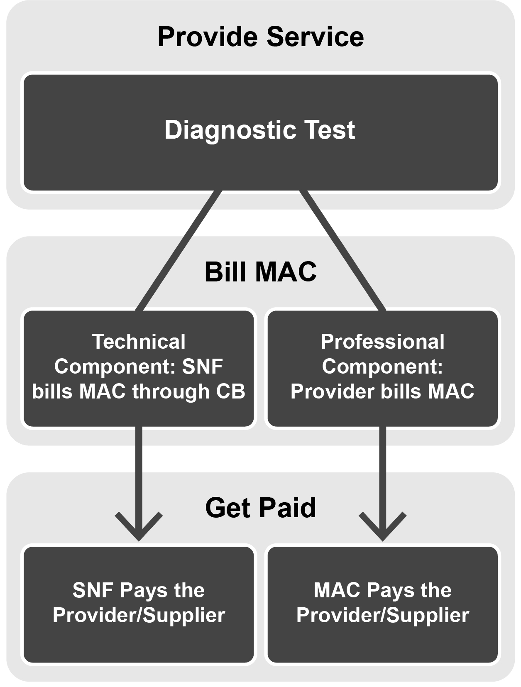

In this lesson, you’ll learn about excluded Skilled Nursing Facility (SNF) Consolidated Billing (CB) services. It should take about 20 minutes to complete.
After completing this lesson, you should be able to correctly:
Recognize excluded Part A SNF CB services
Services Excluded from Part A SNF Consolidated Billing
Services not included in the SNF Prospective Payment System (PPS) and Part A CB requirements are called “excluded” services. Excluded SNF CB services means these services are separately reimbursable under Medicare Part B rather than bundled into the SNF’s comprehensive PPS per diem payment for the covered Part A stay.
Don’t get confused! The term “excluded” usually means services excluded from Medicare coverage, but that is not the case when referring to SNF CB.
Now, let’s review what you’ve learned about what “excluded” means in the context of SNF CB.
Review Question
Select the correct answer.
If a service is “excluded” under the Skilled Nursing Facility Prospective Payment System or Medicare Part A Consolidated Billing, this means that it is excluded from Medicare coverage.
Part A (Institutional) or Part B (Professional) Exclusions
You can identify SNF CB-excluded services as institutional (bill to Medicare Part A) or professional (bill to Medicare Part B). The Centers for Medicare & Medicaid Services (CMS) annually updates SNF CB files and displays the specifically included and excluded services by billing codes.
Part A or Part B Exclusions
Difference
Part A (Institutional) Claims
Part B (Professional) Claims
Difference: How are they identified?
Part A (Institutional) Claims: CMS regularly updates files that providers and suppliers can use to determine if services are included or excluded under SNF CB.
Part B (Professional) Claims: CMS regularly updates files that providers and suppliers can use to determine if services are included or excluded under SNF CB.
Difference: How are they grouped in the files?
Part A (Institutional) Claims: By major category
Part B (Professional) Claims: By type of service (for example, physician or ambulance)
The annual SNF Part A update file contains a comprehensive list of codes excluded from Part A SNF CB organized by major category. The five major categories are:
Excluded Services Beyond the Scope of a SNF
Excluded Services when Rendered to Specific Beneficiaries
Excluded Services Rendered by Certified Providers
Excluded Preventive and Screening Services
Included Part B Therapy Services in SNF CB*
*
Unlike the others, this major category contains services included in Part A and Part B SNF CB rather than services excluded from Part A SNF CB.
Major Category I: Excluded Services Beyond the Scope of a SNF
Certain outpatient services are excluded from SNF CB only when provided in a hospital or Critical Access Hospital (CAH). Major Category I breaks down into the following subcategories:
Computerized axial tomography (CT) scans
Cardiac catheterization
Magnetic resonance imaging (MRI)
Radiation therapy
Angiography, lymphatic, venous, and related procedures
Outpatient surgery and related procedures (lists inclusions rather than exclusions)*
Emergency services
Ambulance transportation for the above listed services and Category II. A.
Additional excluded surgery codes
*
The minor procedures listed in Major Category I.F., while technically considered “surgery,” can nevertheless be safely performed at bedside in the SNF itself and, therefore, remain subject to SNF CB.
Major Category II: Excluded Services when Rendered to Specific Beneficiaries
Major Category II includes End-Stage Renal Disease (ESRD) and hospice services provided to beneficiaries with ESRD or beneficiaries who elected hospice. Major Category II breaks down into the following subcategories:
Dialysis, Erythropoietin (EPO), Aranesp®, and other dialysis-related services for ESRD beneficiaries are excluded from SNF CB for:
Services provided in a Renal Dialysis Facility (RDF), including medically necessary ambulance services to and from the RDF
Home dialysis services when the SNF constitutes the beneficiary’s home
EPO or Aranesp used along with dialysis and given by the RDF
Hospice services for terminal conditions of beneficiaries who elect hospice are excluded from CB. Hospice services for terminal conditions are identified with Types of Bill (TOBs) 81X or 82X. For beneficiaries who elect hospice, SNF PPS and CB include services that are unrelated to the beneficiary’s terminal condition.
Now, let’s review what you’ve learned about Major Category II.
Review Question
Select the correct answer.
For a Skilled Nursing Facility (SNF) resident who has elected hospice, services related to the resident’s terminal condition are excluded from Consolidated Billing for Medicare Part A.
Major Category III: Excluded Services Rendered by Certified Providers
Major Category III includes services excluded only if rendered by any Medicare provider other than a SNF. Major Category III breaks down into the following subcategories:
Certain chemotherapy drugs
Chemotherapy administration
Radioisotopes and their administration
Customized prosthetic devices
If a SNF provides the listed services, they are included in the SNF PPS and CB.
Major Category IV: Excluded Preventive and Screening Services
Preventive and screening services are excluded from the Part A payment made under the SNF PPS but are subject to SNF CB. As such, they are separately payable under Medicare Part B, but only to the SNF. The SNF must bill the services listed on the next page for beneficiaries in a covered Part A stay with Part B eligibility on TOB 22X.
Major Category IV: Excluded Preventive and Screening Services (continued)
Mammography
Vaccines (pneumococcal, seasonal influenza, or hepatitis B)
Vaccine administration
Screening Pap smear and pelvic exam
Colorectal screening services
Prostate cancer screening
Glaucoma screening
Diabetic screening
Cardiovascular screening
Initial Preventive Physical Exam (IPPE)
Abdominal Aortic Aneurysms (AAA) screening
Major Category V: Included Part B Therapy Services in SNF CB
The SNF PPS and CB include therapy services for residents in a covered Part A stay. The SNF also must bill these services for its Part B residents (those residents who are in noncovered Part B stays). Physical Therapy (PT), Occupational Therapy (OT), and/or Speech-Language Pathology (SLP) services, whether furnished by (or under the supervision of) a physician or other health care professional, are included in the SNF PPS and CB requirements.
Now, let’s review what you’ve learned about the major categories.
Review Question
Select the correct answer to fill in the blank.
_____ for Skilled Nursing Facility excluded services are grouped by major category.
Review Question
Select the correct answer.
Major Category IV: Excluded Preventive and Screening Services lists those services that are excluded from payment by Medicare.
Part B Files
The SNF annual Part B update file contains a comprehensive list of codes for Part B services to a beneficiary in a covered or noncovered Part B stay. These services are excluded from SNF PPS and Medicare Part A CB. The supplier or practitioner bills the services directly to the MAC. The four Part B files include:
Part A Stay Physician Services: Physician Professional Services (Other than Interpretation of Diagnostic Tests)
Part A Stay Professional Components of Services to be Submitted with a -26 Modifier: Physician Interpretation of Diagnostic Tests
Part A Stay—Ambulance
Part B Noncovered Stay Only—Therapy Services: Physical, Occupational, and Speech Therapy
CPT only copyright 2018 American Medical Association. All rights reserved.
Part B Files (continued)
The first three files pertain to beneficiary services in a covered Part A stay. The fourth file is for beneficiaries in a noncovered Part B stay.
The first two files list codes that physicians, non-physician practitioners (NPPs), and suppliers (other than ambulance suppliers) can bill separately to the MAC. If neither file lists the code for the service, the service is subject to SNF CB and the physician, NPPs, or supplier must look to the SNF for service payment. The MAC will not pay for the service.
The SNF PPS and CB excludes professional services. The following providers may bill these services directly to the MAC:
Certified nurse-midwife
Certified registered nurse anesthetist
Nurse practitioner and clinical nurse specialist working with a physician
Physician services furnished personally by a physician
Physician assistant working under a physician’s supervision
Qualified psychologist
Nonexcluded (Included) “Incident To” Services
While the SNF PPS and CB exclude the professional services that a physician performs personally, the exclusion does not apply to services that are furnished by someone else as an “incident to” the physician’s professional service. These “incident to” services furnished by others to SNF residents are subject to CB. The SNF must bill the “incident to” services.
Certain NPPs, such as physician assistants, nurse practitioners, clinical nurse specialists, nurse-midwives, or clinical psychologists, can also order and supervise “incident to” services. These services are subject to SNF CB in the same manner as physician-supervised “incident to” services.

File 2: Professional Component of Diagnostic Tests
Many diagnostic tests consist of a separate technical component (representing the test itself) and professional component (representing the physician’s interpretation of the test results). This physician service exclusion applies only to the professional component of the diagnostic test, which the provider bills directly to the MAC. You must submit the codes for professional services in File 2 with a Current Procedural Terminology (CPT) modifier -26.
In contrast, the technical component is subject to CB. The SNF includes the technical component of the diagnostic test on the bill to the MAC for the covered Part A stay. The comprehensive PPS per diem payment the SNF receives includes the payment. The outside provider or supplier must look to the SNF for payment of the technical component of the diagnostic test.
CPT only copyright 2018 American Medical Association. All rights reserved.
File 3: Part A Stay—Ambulance Services
Exclude ambulance trips associated with the following services from the SNF PPS and CB:
Initial ambulance trip to the SNF for admission
Trip home after formal discharge from the SNF without readmission to that or another SNF before the following midnight
Trip for an inpatient admission to a Medicare-participating hospital or CAH
Trip to or from a hospital or CAH for the specific purpose of receiving emergency services or certain other intensive outpatient services excluded from Part A CB
Trip to the beneficiary’s home to receive services from a Medicare-participating Home Health Agency under a plan of care
Trip to or from an RDF for the purpose of receiving Part B dialysis services
File 4: Part B Noncovered Stay—Therapy Services
The MAC always denies codes for PT, OT, and SLP provided to Medicare beneficiaries in a noncovered Part B stay when not billed by the SNF itself. Therapy services must be provided and billed under arrangement with the SNF.
Now, let’s review what you’ve learned about Part B files and services.
Review Question
Select the correct answer.
“Incident to” services furnished to a Skilled Nursing Facility resident in a covered Part A stay are subject to Consolidated Billing.
Review Question
Select the correct answer.
An ambulance trip from a Skilled Nursing Facility (SNF) to the beneficiary’s house is included in the SNF Prospective Payment System and Consolidated Billing if:
Review Question
Select the correct answer.
If you are a physician, non-physician practitioner (NPP), or supplier (other than an ambulance supplier) who provided services to a beneficiary in a covered Part A stay and you cannot find a code in File 1 or File 2, you should:
Other Exclusions—Rural Health Clinic and Federally Qualified Health Center Services
When a SNF Part A resident receives the services of a physician (or another type of practitioner excluded from SNF CB) from a Rural Health Clinic (RHC) or Federally Qualified Health Center (FQHC), those services are not subject to CB. This allows such services to retain their separate identity as excluded “practitioner” services. These services remain separately billable to the MAC when furnished to a SNF resident during a covered Part A stay, while any other services that the RHC or FQHC furnishes to that resident would remain subject to SNF CB.
Medicare excludes physician services from the SNF PPS payment and the CB requirement. When a beneficiary receives clinic services from a hospital-based physician, the physician bills his or her own professional services directly to the MAC and receives reimbursement at the facility rate of the Medicare Physician Fee Schedule (PFS), which does not include overhead expenses.
The hospital’s Part B facility charge only represents the associated overhead expenses to its MAC. The hospital’s facility charge does not involve a separate service (such as a diagnostic test) furnished along with the physician’s professional service; rather, it represents the overhead expenses associated with furnishing the professional service itself. Accordingly, hospitals bill for “facility charges” under the physician Evaluation and Management (E&M) codes in the range of 99201–99245 and G0463. Hospital providers, including CAHs, billing for such services identified above must submit the charges on TOBs 13X or 85X, respectively.
Now, let's review what you've learned about exclusions.
CPT only copyright 2018 American Medical Association. All rights reserved.
Review Question
Select the correct answer.
When splitting a Medicare Part A beneficiary’s diagnostic tests into a technical component and a professional component, both components are subject to Skilled Nursing Facility Consolidated Billing.
Review Question
Select the best answer.
When a Skilled Nursing Facility Part A resident receives the services of a physician from a _____, those services are not subject to Consolidated Billing.
Review Question
Select the correct answer.
Major Category V and File 4 both tell you how to bill which services?
Lesson 3 Summary
In Lesson 3, you’ve learned:
For Skilled Nursing Facility (SNF) Consolidated Billing (CB), “excluded” refers to services separately reimbursable under Medicare Part B rather than bundled into the SNF’s comprehensive Prospective Payment System (PPS) per diem payment for the covered Part A stay.
The SNF annual Part A update files include five major categories of services:
Excluded Services Beyond the Scope of a SNF
Excluded Services when Rendered to Specific Beneficiaries
Excluded Services Rendered by Certified Providers
Excluded Preventive and Screening Services
Included Part B Therapy Services in SNF CB
Lesson 3 Summary (continued)
The SNF annual Part B update file includes the following four files of services:
Part A Stay—Physician Services: Physician Professional Services (Other than Interpretation of Diagnostic Tests)
Part A Stay—Professional Components of Services to be Submitted with a -26 Modifier: Physician Interpretation of Diagnostic Tests
Part A Stay—Ambulance
Part B Noncovered Stay Only—Therapy Services: Physical, Occupational, and Speech Therapy
Job Aid D summarizes the SNF CB Part A and Part B exclusion files.
CPT only copyright 2018 American Medical Association. All rights reserved.
You’ve Completed Lesson 3: Services Excluded from Part A SNF Consolidated Billing.
Now that you’ve learned about services excluded from SNF PPS and CB during a covered Part A stay, let’s look at SNF CB during a noncovered Part B stay. Lesson 4 provides an overview of services included under SNF CB for beneficiaries in a noncovered Part B stay.
Select “Lesson 4: SNF Consolidated Billing During a Noncovered Part B Stay” in the course's Main Menu to begin Lesson 4.
Statutory and Regulatory Provisions Under section 1140 of the Social Security Act (the Act), there are restrictions regarding the use of certain words, letters, emblems and symbols in connection with advertisements, solicitations or other productions. Specifically, the words “Social Security,” “Social Security Account,” “Social Security System,” “Social Security Administration,” “Medicare,” “Health Care Financing Administration,” “Department of Health and Human Services,” “Health and Human Services,” “Supplemental Security Income Program,” or “Medicaid” may not be used in a manner that gives (or could give) the impression that the solicitation, advertisement or other production is endorsed, authorized, affiliated with or approved by the Centers for Medicare and Medicaid Services or by the Department of Health and Human Services.
Similarly, letters such as “SSA,” “HCFA,”[1] “DHHS,” “HHS,” “SSI,” or other combinations or variations also may not be used to imply approval or involvement by the Department of Health and Human Services or CMS. The same rules apply to the use of symbols and emblems associated with the Department of Health and Human Services or with the Centers for Medicare and Medicaid Services, such as the design of the social security card, the Medicare card, or envelopes or stationary used by either entity. State agencies or political subdivisions of state agencies are exempt from these restrictions.
Government publications are not subject to copyright law.[2] However, section 1140(a)(2)(B) of the Act prohibits the reproduction, reprinting or distribution of items consisting of forms, applications or other publications of the Social Security Administration or the Department of Health and Human Services for a fee unless specific, written authorization is obtained as prescribed by regulations published by the Commissioner of Social Security or the Secretary of the Department of Health and Human Services.[3] Violations of Section 1140 are punishable by a civil money penalty of $5,000 for each piece of advertisement, solicitation or other production, and up to $25,000 for each instance where a broadcast or telecast is used as the means of transmission for the solicitation or advertisement. See 42 C.F.R. § 1003.102(b)(7). Section 1140 is enforced by the Office of the Inspector General. It should be noted that the use of a disclaimer to inform the public that a given solicitation or advertisement is not endorsed or approved of by any governmental entity does not waive the requirements of section 1140.
Analysis CMS information may be used in an advertisement or solicitation if certain words, letters, emblems and symbols are not used in a manner that could conceivably give the impression that the advertisement has been approved, authorized or sanctioned by either the Department of Health and Human Services or CMS. The information CMS makes public on its web site can be incorporated into another web site for without prior authorization if the commercial entity does not charge a fee for reproductions of forms, applications or other government publications. If an individual wishes to copy a CMS publication, form or application verbatim in order to sell it to the public, CMS may refuse to grant written authorization for reproduction. However, it would be permissible for an individual to retrieve information from CMS’ website, incorporate or synthesize that information into his own publication, and sell the publication to the public. Arguably, CMS’ website constitutes a “publication” that cannot simply be copied by an individual who wishes to sell the information.
[1]We would also expect that the initials “CMS” would be included in this list in light of the agency’s new name.
[2]17 U.S.C. § 105.
[3]The Department has yet to publish regulations pursuant to subsection 1140(a)(2)(B); however, we believe that CMS has the authority to disapprove reproduction of its publications.